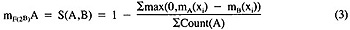
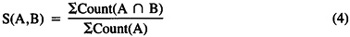
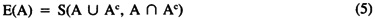
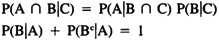

by Abraham Kandel
CRC Press, CRC Press LLC
ISBN: 084934297x Pub Date: 11/01/91
|
|
Fuzzy Expert Systems
by Abraham Kandel CRC Press, CRC Press LLC ISBN: 084934297x Pub Date: 11/01/91 |
| Previous | Table of Contents | Next |
Another new concept is degree of subsethood S(A,B), the degree to which A is a subset of B. Analyses of subsethood are relatively recent. Bandler and Kohout5 pointed out that, with nonfuzzy sets, A ⊂ B if A ∈ 2B. They suggested the fuzzification strategy of interpreting S(A,B) as the degree of membership of A in B fuzzy power set F(2B), i.e., mF(2B)(A) = S(A,B). Kosko39 showed how to operationally measure S(A,B) by counting violations of the dominated membership function relationship mA ≤ mB.
Suppose mA is dominated by mB for all elements x except the violation xv: mA(xv) > mB(xv). Then should not A still be a subset of B to a high degree? Should not this degree depend on the magnitude and relative frequency of violations? Consider the fuzzy sets A = (.2 0 .5 .7) and B = (.3 1 .8 .6) and C = (1 .2 .8 .8). Then A ∉ F(2B) and A ∈ F(2C). The violation x4, with magnitude .7 - .6 = .1, prevents A from being a proper fuzzy subset of B. We solve this problem by defining nonsubsethood in terms of normalized violations, then negate that measure. Σmax(0,mA(xi) - mB(xi)) counts violations of mA ≤ mB. Dividing by ΣCount(A) adjusts for the mass of A and forces the nonsubsethood measure to vary between 0 and 1.
Negating this measure defines fuzzy subsethood:

Therefore, S(A,B) = 1 if mA(xi) ≤ mB(xi) for all i. If A = (.2 0 .5 .7) and B = (.3 1 .8 .6), then S(A,B) = 1 - .1/1.4 = 13/14. Fuzzy theorists will note that 1 - max(0, mA - mB) = min(1 - mA + mB) = tL(A → B), the Lucasiewicz implication operator for fuzzy logic. The key theorem39 is that the local definition of S(A,B) given by Equation 3 in terms of pairwise violations is equivalent to a global ratio of cardinalities:

Hence, for nonfuzzy A and B, S(A,B) is a rational number.
Of course, Equation 4 has the look of a conditional probability P(B | A) = P(A ∩ B)/P(A). Zadeh52-54 even defines his relative sigma-count Σcount(B/A) according to the right-hand side of Equation 4, though he notes S(A,B) + S(A,Bc) ≥ 1. Who can derive a conditional probability from first principles? The Radon-Nikodym theorem in measure theory allows the derivation of the conditional expectation E(mA | mB) = P(B | A), if A and B are nonfuzzy, but this is hardly a first-principles derivation! Fuzzy theorists will also note that if the intersection A ∩ B in Equation 4 is defined with any other t-norm T than min, and if max in Equation 3 is or is not replaced with the dual (or any) other t-conorm S, then, in general, S(A,B) is strictly greater than the ratio of sigma-counts since T ≤ min and max(0, x) = S(0, x) for all S.
The following theorem is the key result of the new fuzzy concepts, which follows trivially from theorems 2 and 4, and provides a definitive answer to the often heard objection to fuzzy theory, “What can you get with fuzzy theory that you cannot get with probability theory?”:

Suppose a dogmatic probabilist claims some probability measure P measures the uncertainty of the situation A and, thus, that fuzzy entropy is but a disguised notational variant of classical measure theory. Then P cannot be identically 0, since E(A) > 0 if A ∈ In/Bn. Nevertheless, P(A) > 0 implies that A = X = Ø, since in a probability space A ∩ Ac = Ø and A ∪ Ac = X. Then the sure event X is impossible: P(X) = 0, not 1. Contradiction!
We also note that, using a traditional logarithm-of-probability measure of entropy, the maximum entropy27,50 set is the uniform distribution U = (1/n, . . . , 1/n). However, E(U) = 1/n - 1 by Equation 2, revealing how fast U approaches Ø with increasing dimensionality n. Of course, E(Ø) = 0. This raises the question: which distribution best characterizes maximum uncertainty, the midpoint M = (½, . . . , ½) or the uniform distribution U = (1/n, . . . , 1/n)? It seems odd that mU(x) depends on n but mM(x) does not. An appeal to relative constancy is unpersuasive because the entropy of the constant set C = (c, . . . , c) is E(C) = c/1 - c if c ≤ ½, 1 - c/c if c ≥ ½, which again is maximized if c = ½. For every uniform distribution U there is a constant distribution C so that U = C, the point of intersection of the probability simplex with the locus of equipossible events. (There are uncountably many irrational-coordinate C ≠ U.) More generally we can show that every probability distribution P is such that E(P) ≤ E(U) = 1/n - 1, and, consequently, as dimensionality increases, probability distributions approach entropic degeneracy! For the metric associative memories discussed later that store patterns at In vertices, M not U corresponds to the most ambiguous memory cue.
Another remark is in order about fuzzy vs. probabilistic foundations. There is the Cox theorem11 that Bayesians cite to show that non-Bayesian statisticians and probabilists, in particular frequentists, are ultimately in error. Thus, Jaynes28 proclaims, “Cox proved that any method of inference, in which we represent degrees of plausibility by real numbers, is necessarily either equivalent to Laplace’s, or inconsistent.” Cox used bivalent logic (Boolean algebra) to show that the “conditions of consistency can be stated in the form of functional equations,”28 namely, the probabilistic product and sum rules:

| Previous | Table of Contents | Next |